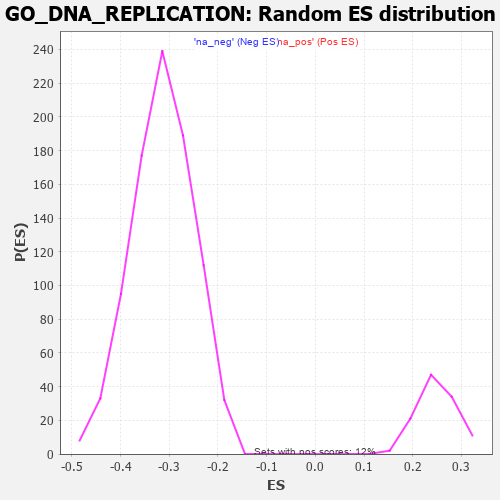

| | | Dataset | 7d |
| Phenotype | NoPhenotypeAvailable |
| Upregulated in class | na_pos |
| GeneSet | GO_DNA_REPLICATION |
| Enrichment Score (ES) | 0.38395178 |
| Normalized Enrichment Score (NES) | 1.5477583 |
| Nominal p-value | 0.0 |
| FDR q-value | 0.25479054 |
| FWER p-Value | 1.0 |
Table: GSEA Results Summary
 Fig 1: Enrichment plot: GO_DNA_REPLICATION
Fig 1: Enrichment plot: GO_DNA_REPLICATION
Profile of the Running ES Score & Positions of GeneSet Members on the Rank Ordered List
| PROBE | GENE SYMBOL | GENE_TITLE | RANK IN GENE LIST | RANK METRIC SCORE | RUNNING ES | CORE ENRICHMENT | | 1 | CDC45 | | | 239 | 0.950 | -0.0047 | Yes |
| 2 | HUS1 | | | 362 | 0.735 | -0.0003 | Yes |
| 3 | CLSPN | | | 379 | 0.719 | 0.0170 | Yes |
| 4 | NBN | | | 405 | 0.696 | 0.0327 | Yes |
| 5 | RAD9A | | | 418 | 0.681 | 0.0495 | Yes |
| 6 | MCM10 | | | 427 | 0.673 | 0.0667 | Yes |
| 7 | CENPS | | | 439 | 0.666 | 0.0833 | Yes |
| 8 | WRN | | | 469 | 0.649 | 0.0971 | Yes |
| 9 | ORC3 | | | 479 | 0.644 | 0.1134 | Yes |
| 10 | RFC2 | | | 488 | 0.635 | 0.1295 | Yes |
| 11 | THOC1 | | | 507 | 0.627 | 0.1441 | Yes |
| 12 | MGME1 | | | 515 | 0.625 | 0.1601 | Yes |
| 13 | MCM2 | | | 546 | 0.614 | 0.1729 | Yes |
| 14 | ORC2 | | | 550 | 0.613 | 0.1891 | Yes |
| 15 | MCM7 | | | 612 | 0.591 | 0.1973 | Yes |
| 16 | MCM8 | | | 646 | 0.578 | 0.2087 | Yes |
| 17 | RFC3 | | | 663 | 0.571 | 0.2221 | Yes |
| 18 | MRE11 | | | 693 | 0.560 | 0.2335 | Yes |
| 19 | CDC6 | | | 709 | 0.557 | 0.2467 | Yes |
| 20 | EXD2 | | | 801 | 0.532 | 0.2495 | Yes |
| 21 | BLM | | | 804 | 0.531 | 0.2636 | Yes |
| 22 | RFC4 | | | 815 | 0.528 | 0.2765 | Yes |
| 23 | RPA1 | | | 817 | 0.527 | 0.2906 | Yes |
| 24 | RFWD3 | | | 843 | 0.521 | 0.3015 | Yes |
| 25 | RPA2 | | | 851 | 0.519 | 0.3147 | Yes |
| 26 | RMI1 | | | 886 | 0.509 | 0.3241 | Yes |
| 27 | ZPR1 | | | 967 | 0.491 | 0.3272 | Yes |
| 28 | ORC5 | | | 1022 | 0.479 | 0.3332 | Yes |
| 29 | RAD51 | | | 1090 | 0.466 | 0.3373 | Yes |
| 30 | MCM3 | | | 1142 | 0.456 | 0.3431 | Yes |
| 31 | WDHD1 | | | 1172 | 0.451 | 0.3516 | Yes |
| 32 | RBBP7 | | | 1220 | 0.443 | 0.3576 | Yes |
| 33 | KAT7 | | | 1240 | 0.440 | 0.3671 | Yes |
| 34 | SSRP1 | | | 1323 | 0.424 | 0.3681 | Yes |
| 35 | GRWD1 | | | 1449 | 0.401 | 0.3631 | Yes |
| 36 | DACH1 | | | 1471 | 0.395 | 0.3711 | Yes |
| 37 | MCM6 | | | 1506 | 0.389 | 0.3773 | Yes |
| 38 | SDE2 | | | 1579 | 0.378 | 0.3783 | Yes |
| 39 | ORC1 | | | 1661 | 0.363 | 0.3778 | Yes |
| 40 | WAPL | | | 1758 | 0.344 | 0.3749 | Yes |
| 41 | RAD17 | | | 1804 | 0.336 | 0.3783 | Yes |
| 42 | POLH | | | 1983 | 0.307 | 0.3640 | Yes |
| 43 | EXO1 | | | 2002 | 0.304 | 0.3699 | Yes |
| 44 | INO80 | | | 2120 | 0.288 | 0.3629 | Yes |
| 45 | TONSL | | | 2121 | 0.288 | 0.3706 | Yes |
| 46 | DTL | | | 2154 | 0.284 | 0.3742 | Yes |
| 47 | ATAD5 | | | 2197 | 0.277 | 0.3764 | Yes |
| 48 | CDK2 | | | 2226 | 0.272 | 0.3802 | Yes |
| 49 | TOP3A | | | 2331 | 0.256 | 0.3739 | Yes |
| 50 | FAF1 | | | 2340 | 0.255 | 0.3797 | Yes |
| 51 | SIN3A | | | 2361 | 0.251 | 0.3840 | Yes |
| 52 | FEN1 | | | 2446 | 0.237 | 0.3797 | No |
| 53 | CDT1 | | | 2505 | 0.226 | 0.3784 | No |
| 54 | RAD1 | | | 2528 | 0.223 | 0.3816 | No |
| 55 | RTF2 | | | 2615 | 0.210 | 0.3764 | No |
| 56 | KAT5 | | | 2644 | 0.206 | 0.3784 | No |
| 57 | ATR | | | 2800 | 0.183 | 0.3637 | No |
| 58 | DUT | | | 2985 | 0.152 | 0.3444 | No |
| 59 | RTEL1 | | | 3010 | 0.148 | 0.3454 | No |
| 60 | BRCA2 | | | 3024 | 0.146 | 0.3476 | No |
| 61 | RBBP6 | | | 3066 | 0.141 | 0.3462 | No |
| 62 | REV1 | | | 3104 | 0.136 | 0.3452 | No |
| 63 | EME1 | | | 3246 | 0.114 | 0.3304 | No |
| 64 | NFIC | | | 3357 | 0.096 | 0.3190 | No |
| 65 | RFC5 | | | 3389 | 0.091 | 0.3175 | No |
| 66 | ORC4 | | | 3391 | 0.090 | 0.3198 | No |
| 67 | RFC1 | | | 3437 | 0.085 | 0.3164 | No |
| 68 | TOP1 | | | 3449 | 0.084 | 0.3173 | No |
| 69 | GLI1 | | | 3489 | 0.079 | 0.3145 | No |
| 70 | LRWD1 | | | 3582 | 0.063 | 0.3045 | No |
| 71 | DHX9 | | | 3693 | 0.044 | 0.2917 | No |
| 72 | SMC3 | | | 3701 | 0.042 | 0.2920 | No |
| 73 | MCM9 | | | 4163 | -0.036 | 0.2344 | No |
| 74 | PNKP | | | 4572 | -0.111 | 0.1856 | No |
| 75 | ESCO2 | | | 4605 | -0.119 | 0.1847 | No |
| 76 | RBMS1 | | | 4749 | -0.149 | 0.1706 | No |
| 77 | TIPIN | | | 4839 | -0.166 | 0.1638 | No |
| 78 | ATRX | | | 4929 | -0.184 | 0.1575 | No |
| 79 | PURA | | | 5032 | -0.205 | 0.1500 | No |
| 80 | REV3L | | | 5051 | -0.209 | 0.1534 | No |
| 81 | ING4 | | | 5084 | -0.221 | 0.1553 | No |
| 82 | DDX11 | | | 5102 | -0.225 | 0.1592 | No |
| 83 | ATM | | | 5210 | -0.249 | 0.1523 | No |
| 84 | CDK1 | | | 5264 | -0.262 | 0.1527 | No |
| 85 | RAD50 | | | 5314 | -0.276 | 0.1539 | No |
| 86 | FGFR1 | | | 5543 | -0.332 | 0.1339 | No |
| 87 | FANCM | | | 5824 | -0.413 | 0.1095 | No |
| 88 | ATG7 | | | 5858 | -0.420 | 0.1167 | No |
| 89 | SET | | | 5895 | -0.434 | 0.1238 | No |
| 90 | RAC1 | | | 6036 | -0.484 | 0.1191 | No |
| 91 | POLK | | | 6041 | -0.486 | 0.1317 | No |
| 92 | CDC42 | | | 6236 | -0.548 | 0.1219 | No |
| 93 | PIF1 | | | 6604 | -0.713 | 0.0945 | No |
| 94 | EGFR | | | 6708 | -0.765 | 0.1021 | No |
| 95 | RBBP4 | | | 7123 | -1.010 | 0.0768 | No |
| 96 | CDK9 | | | 7266 | -1.138 | 0.0895 | No |
Table: GSEA details [plain text format]

Fig 2: GO_DNA_REPLICATION: Random ES distribution
Gene set null distribution of ES for GO_DNA_REPLICATION